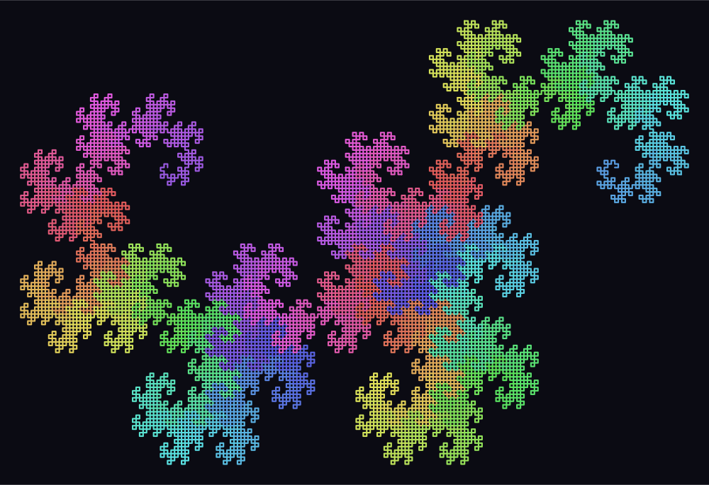
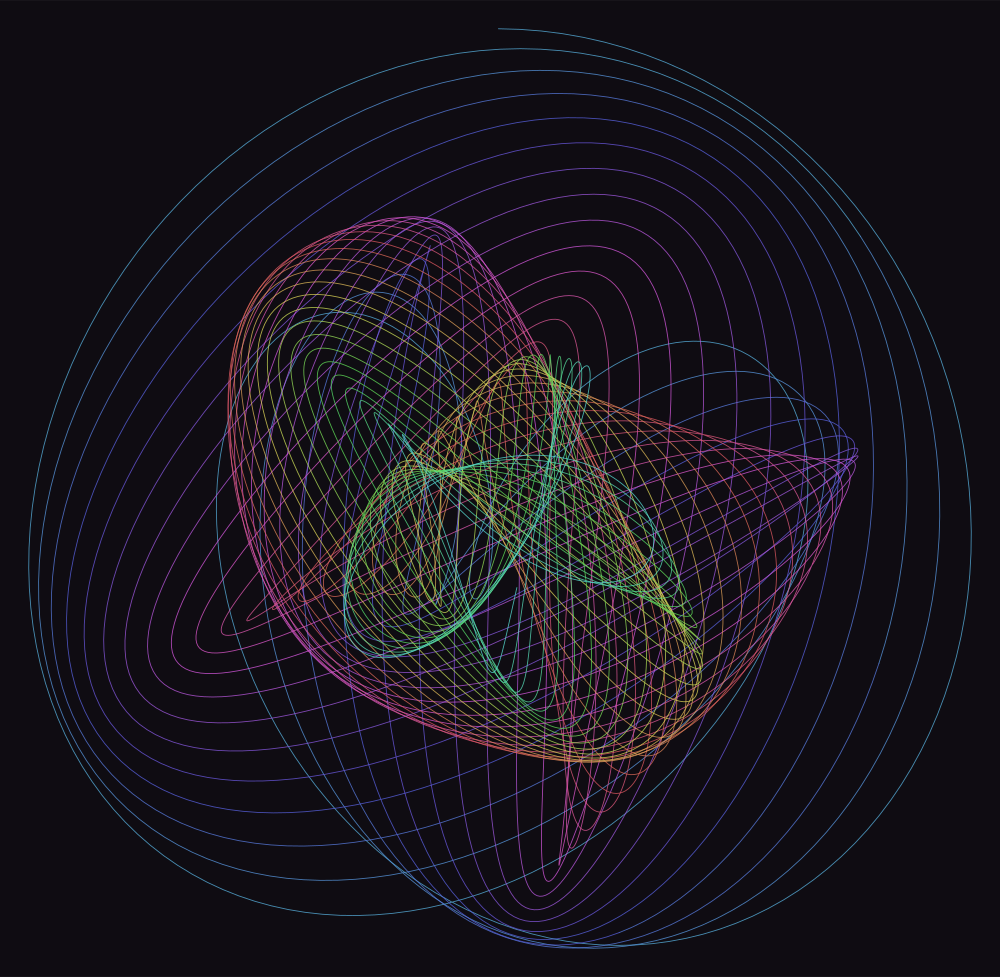
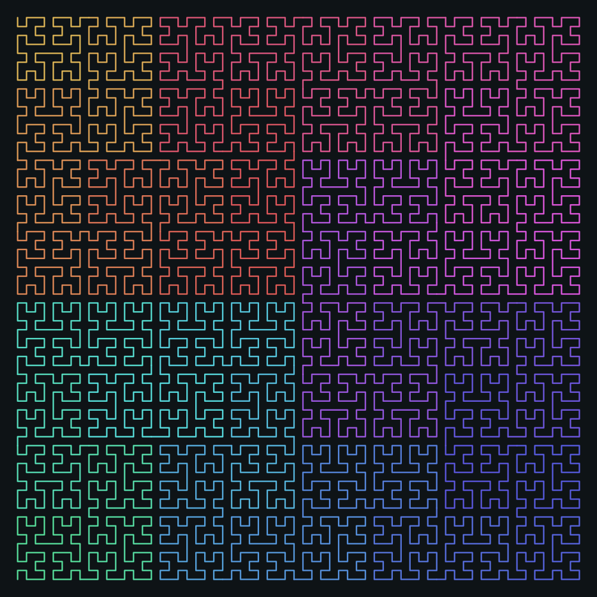
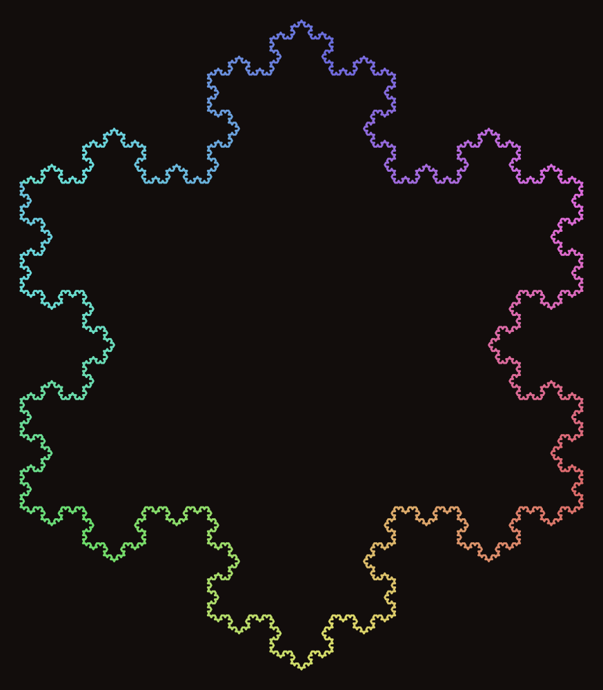
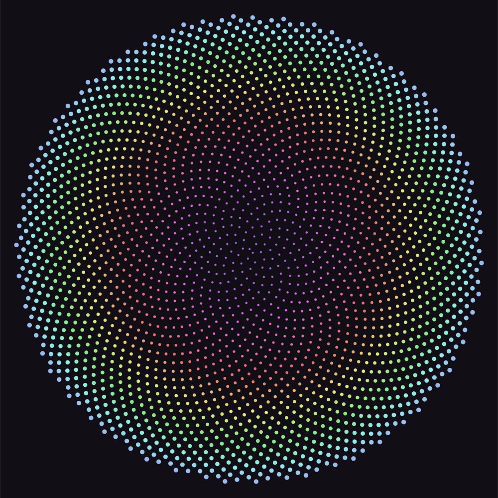
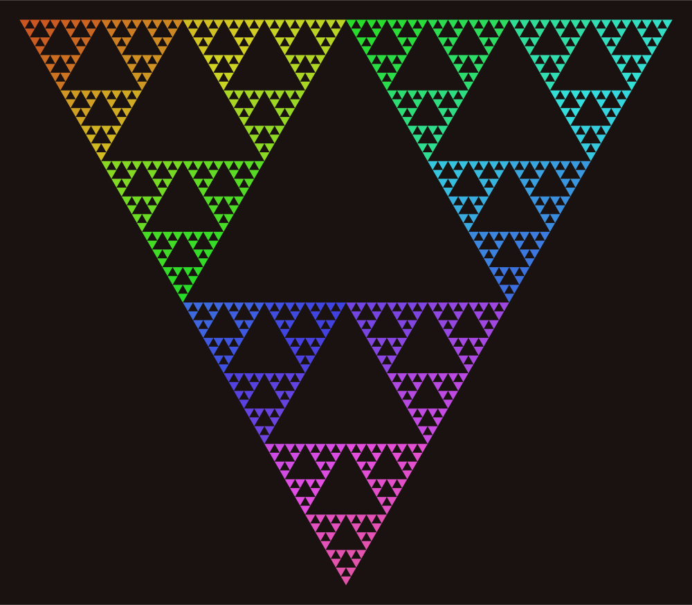
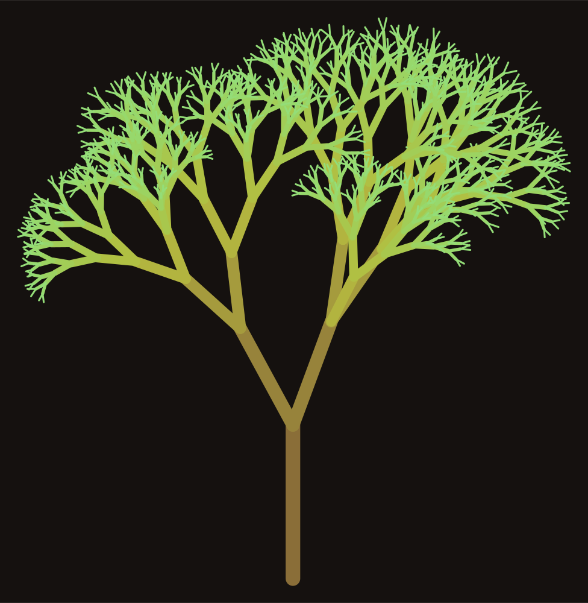
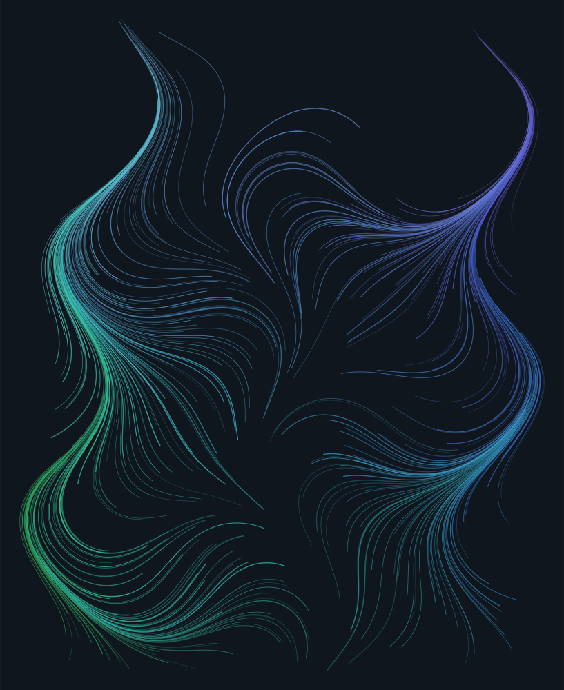

dragon.loom
Fold a strip of paper in half, and in half again, fourteen times.
Open it back out so every crease sits at a right angle. This.
16,384 primitives

harmonograph.loom
Two pendulums swinging at almost - but not quite - the same rate,
dragging a pen between them. The drift is the entire drawing.
10,999 primitives

hilbert.loom
A single line that visits all 4096 cells of a 64x64 grid,
never crosses itself, and keeps close things close.
4,095 primitives

koch.loom
The whole snowflake follows from one rule: a line is four lines,
with a triangle standing where its middle third used to be.
3,072 primitives

phyllotaxis.loom
137.507764 degrees. Turn by that much between each seed and nothing
ever lines up, because the golden ratio is the number hardest to
approximate with a fraction. Sunflowers found this out first.
2,400 primitives

sierpinski.loom
Take out the middle. Do it again to whatever is left.
The limit has no area at all and an edge without end.
729 primitives

tree.loom
Never the same tree twice - unless you keep the seed.
`{` remembers where the turtle is standing; `}` puts it back.
1,570 primitives

wind.loom
A field with a firm opinion about which way things ought to go,
and four hundred particles holding no opinion whatsoever.
23,100 primitives